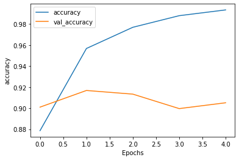
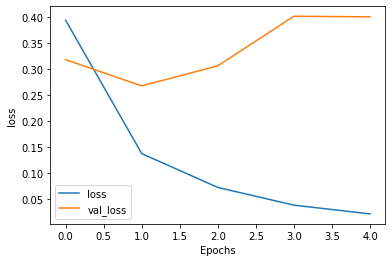

ক্ল্যাসিফিকেশন, ‘জেসন’ ফরম্যাটের ডাটাসেট - নোটবুক

বাংলা ক্ল্যাসিফিকেশন, ‘জেসন’ ফরম্যাটের ডাটাসেট
আপনারা কি একটা জিনিস লক্ষ্য করেছেন - আমরা যখন ইন্টারনেটে প্রচুর ওয়েবসাইটের ডাটাবেজে এক্সেস করি, সেগুলোর বেশিরভাগই এখন মাইক্রো সার্ভিসে চলে এসেছে। এটা ঠিক যে - পৃথিবীতে যেখানে বেশিরভাগ ডেটা ওয়েবের মাধ্যমে অ্যাক্সেস করা হয়, তার বেশিরভাগ ডাটা প্রায়শই আমরা JSON ফর্ম্যাটে দেখতে পাচ্ছি। বিভিন্ন ওয়েব সার্ভিসের ‘এপিআই’ থেকে ডাটা টানার সময় আমাদের এই ধরনের ফরম্যাটের ডাটা প্রয়োজন হতে পারে, যার স্ট্রাকচার খুবই সহজ এবং কোন ধরনের আলাদা পার্সার ব্যবহার ছাড়াই এটাকে পড়া সম্ভব।
আমরা যখন ‘এক্সএমএল’ ডাটা নিয়ে কাজ করতাম, সেটা ওরকম ‘হিউম্যান রিডেবল’ নয় এবং এর জন্য আলাদা করে ‘পার্সার’ মানে সফটওয়্যার লাগতো যা আমাদের জন্য বেশ সমস্যাজনক বটে। JSON এর অর্থ ‘জাভাস্ক্রিপ্ট অবজেক্ট নোটেশন’। ‘জেসন’ হ'ল খুবই ‘লাইটওয়েট’ ডাটা ফর্ম্যাট যা বিভিন্ন ভাষা অর্থাৎ ল্যাঙ্গুয়েজের মধ্যে ডাটা ইন্টারচেঞ্জের জন্য ব্যবহৃত হয়। এটা মানুষের পক্ষে পড়া সহজ এবং যেকোন মেশিন দ্বারা সহজেই ‘পার্স’ করা যায়।
ইন্ডাস্ট্রি স্ট্যান্ডার্ড এপিআই
এর আগের যতগুলো বই লিখেছি সেই বইগুলোতে আমি ডাটাসেট হিসেবে সাধারণত “কমা সেপারেটেড ভ্যালু” অথবা ‘সিএসভি’ ফরম্যাট ব্যবহার করেছি। ‘সিএসভি’ ডাটাসেট হিসেবে বড় বড় মেশিন লার্নিং শেখানোর প্ল্যাটফর্ম যেমন ক্যাগলে এখনো ব্যবহার হয় তবে - ইন্ডাস্ট্রিতে কমপ্লেক্স ডাটা চলে আসায় তার জন্য নতুন কিছু ফরম্যাটের প্রয়োজন পড়েছে। সেই কারণে এই বইতে নতুন একটা ফরম্যাট নিয়ে কাজ করতে চাই যা আমার অভিজ্ঞতায় পুরো পৃথিবীর ডাটা ইন্ডাস্ট্রিগুলো ব্যবহার করছে।
আমি নিজেও আমার অফিসের কাজে বহুদিন ধরে এই ফরম্যাট ব্যবহার করছি কারণ শুরুতেই এর ব্যবহারের সহজতা এবং ভিন্ন ভিন্ন সিস্টেমের মধ্যে ডাটা ‘ইন্টার এক্সচেঞ্জের’ জন্য এই ফরম্যাটকে সবাই ভালবাসে। সবচেয়ে বড় কথা হচ্ছে - আমরা মানুষেরা এটা সহজেই পড়তে পারি এবং এর মধ্যে যদি কোন কিছু ‘ব্রোকেন’ অর্থাৎ কাজ করছে না তাহলে সেটাকে ‘ডিবাগ’ করা অনেক সহজ।
ডাটার সহজবোধ্যতা, ইন্টিগ্রিটি ঠিক রাখা
মনে রাখতে হবে, আমরা যে কাজ করছি সেখানে ডাটা হ্যান্ডলিংয়ের সময় ডাটার অখন্ডতা অর্থাৎ সেটার ‘ইন্টেগ্রিটি’ ধরে রাখতে চাই যাতে ডাটাগুলো এক সিস্টেম থেকে আরেক সিস্টেমে গেলে সেই ডাটাগুলো ‘পাঠযোগ্য’ থাকে। আমি চাইবো যে পুরো মেশিন লার্নিং এর পাইপলাইন ধরে একেকটা ট্রান্সফরমেশনের আগে এবং পরে ডাটাটা কি হচ্ছে সেটা বোঝানোর জন্য একটা সহজ ‘এপিআই’ ফরম্যাট বেছে নিয়েছি এখানে।
জেসন এই লক্ষ্যগুলি অর্জনে খুব কার্যকর ভাবে কাজ করছে, এবং এনকোডিং এর জায়গায় জেসন অন্যান্য স্ট্যান্ডার্ড লাইব্রেরির সাথে দুর্দান্ত কার্যকারিতা দেখায়। আমরা পুরো বই জুড়ে এই স্ট্যান্ডার্ড লাইব্রেরির কার্যকারিতাটি ব্যবহার করব।
# আমরা সবসময় চাইবো টেন্সরফ্লো ২.x ব্যবহার করতে
try:
%tensorflow_version 2.x
except Exception:
pass
ক্যাগলের মাল্টিক্লাস ক্লাসিফিকেশনের নিউজ ডাটাসেট
আগের ডিপ লার্নিং বইয়ে বাংলা সেন্টিমেন্ট এনালাইসিস দেখেছি - যেখানে টেন্সরফ্লো দিয়ে ছোট একটা ডাটাসেট থেকে তার প্রেডিকশনগুলো দেখিয়ে ছিলাম। আগের ডিপ লার্নিং বইয়ের ন্যাচারাল ল্যাঙ্গুয়েজ প্রসেসিং অংশে একটা নির্ধারিত বাক্যকে মডেলে পাঠালে সে বাক্যের ভেতরের ‘ধারণাগুলো’ বুঝে বাক্যটা ‘পজিটিভ’ না ‘নেগেটিভ’ এই ব্যাপারটা জানিয়ে দিত।
আগের বইয়ে বিশেষ করে ‘হাতেকলমে পাইথন ডিপ লার্নিং’ বইটাতে কিছু বাংলা ডাটাসেট ব্যবহার করেছিলাম যেগুলোকে ‘হোস্ট’ করতে হয়েছিল গিটহাবে। গিটহাবে বড় বড় ফাইল, বিশেষ করে - যেগুলো প্রায় কয়েক গিগাবাইটের ওপরে - সেগুলোকে হোস্ট করার সমস্যা হচ্ছে; প্রথমত: ফাইলগুলোর সাইজ এবং পরবর্তীতে এই বড় বড় ফাইলগুলোকে ‘হোস্ট’ করতে হয় গিটহাব ‘এলএফএস’ অর্থাৎ লার্জ ফাইল সিস্টেম হিসেবে, যা অনেক সময় বিনামূল্যের একাউন্টে ব্যান্ডউইড্থ ট্রাফিকের লিমিটে পড়ে যায়।
সেদিক থেকে বড় বড় ডাটাসেট ‘পোষ্ট’ করার জন্য ক্যাগল একটা ভালো প্ল্যাটফর্ম। এরমধ্যে ‘ব্যান্ডউইডথ’ এবং ডাটাসেটের সাইজের উপরে সেরকম সীমাবদ্ধতা নেই। সবচেয়ে বড় কথা হচ্ছে, ক্যাগল থেকে বড় বড় ডাটাসেট গুগল ‘কোলাবে’ ডাউনলোড করতে ‘ট্রানস্ফার স্পিড’ পাওয়া যায় প্রতি সেকেন্ডে ১০০ মেগাবাইট এরও বেশি। এটা একটা বিশাল প্রাপ্তি যখন ‘গুগল কোলাব’ আমরা ব্যবহার করি ১২ ঘন্টার জন্য - বিনামূল্যের একাউন্টে।
৯টা ক্যাটাগরির ক্লাসিফিকেশন
আমাদের বাংলা পত্রিকা ডাটাসেটে যেই ডাটাগুলোকে ব্যবহার করা হয়েছে, তার মধ্যে ৯টা ক্যাটাগরিতে সবগুলো কনটেন্ট ভাগ করে ফেলা হয়েছে। ওই ক্যাটাগরিগুলোকে সামনে লিস্ট আকারে দেখব নোটবুক থেকে। ক্যাটাগরিগুলো হচ্ছে 'bangladesh', 'economy', 'education', 'entertainment', 'international', 'life-style', 'opinion', 'sports', এবং 'technology'।
দুটো অথেন্টিকেশন পদ্ধতি, গুগল কোলাব এবং ক্যাগল
বড় ফাইল নিয়ে ঝামেলা থেকে মুক্তি দিয়েছে 'ক্যাগল'। পুরো পৃথিবী 'ক্যাগলে' হোস্ট করে তাদের ডাটাসেট। সমস্যা একটাই, ‘কোলাব’ থেকে ডাটাসেট ডাউনলোড করতে হলে সেটাকে দুটো অথেন্টিকেশন পদ্ধতির মাধ্যমে যেতে হয় যা স্ক্রিপ্ট হিসেবে লিখে রাখলে প্রতিবারই ব্যবহার করা যাবে। বিশেষ করে, গুগল কোলাবের (জুপিটার) পাইথন নোটবুক চালানোর সময়। শুরুতে, এই দুটোকে কানেক্ট করে দিতে হবে গুগল কোলাবের সাথে ক্যাগলের একাউন্ট - একটা ‘এপিআই টোকেন’ দিয়ে। এটা ডাউনলোড করার জন্য আমাদেরকে যেতে হবে ক্যাগলের গুগলের অ্যাকাউন্ট পেজে, যেখানে আমরা স্ক্রল-ডাউন করে নেমে যাব ‘এপিআই সেকশনে’। ছবি দেখুন।

ছবি: এপিআই সেকশন, ডাউনলোড হয়ে যাবে kaggle.json ফাইল
আমাদের যদি আগে থেকে কোন ‘এপিআই টোকেন’ জেনারেট করা থাকে, সেটাকে বাদ দিতে পারি ‘এক্সপায়ার এপিআই টোকেন’ বাটনে ক্লিক করে। আর সেটা না হলে, আমরা সরাসরি একটা টোকেন জেনারেট করতে পারি ‘ক্রিয়েট নিউ এপিআই টোকেন’ বাটনে ক্লিক করে। বাটনটা ক্লিক করলেই kaggle.json ফাইলটা ডাউনলোড হয়ে যাবে এবং তার উপরে এই ফাইলটা কোথায় রাখতে হবে তার ডাইরেক্টরিটার ব্যাপারে বলে দিচ্ছে ক্যাগল। তৈরি করে নিতে হবে kaggle ফোল্ডার, যেখানে কপি করে নেব kaggle.json ফাইলটাকে।
আপলোড করে নেই অথেন্টিকেশন টোকেন
নতুন একটা নোটবুক তৈরি না করে এই নোটবুকটাকে গিটহাব থেকে ‘ফর্ক’ করে চালালে এই মুহূর্তে ডাউনলোড করা kaggle.json ফাইলটাকে আপলোড করে নিতে হবে গুগল কোলাবে। আমাদের এই ফাইলটা একটা ‘অথেন্টিকেশন মেকানিজম’ - যার মাধ্যমে গুগল কোলাব একটা ডাটাসেটের ফাইলগুলোকে ডাউনলোড করতে গেলে এই ফাইলের মাধ্যমে সে বুঝে নেয় ফাইলের ডাউনলোড রিকোয়েস্টটা আসলে কোথা থেকে আসছে। এটা একটা ‘সিকিউরিটি’ এবং ‘অ্যাকাউন্টেবিলিটি’ চেক গুগলের জন্য। আপনারা ফাইলটাকে টেক্সট এডিটর দিয়ে খুলে দেখতে পারেন। গুগল কোলাবে ফাইল আপলোড করার জন্য নিচের কমান্ডটা ইমপোর্ট করলে সে ফাইল আপলোড করার একটা অপশন দেখিয়ে দেবে।
ফাইল আপলোড

ছবি: গুগল কোলাবের আপলোড প্রম্পট, আপলোড করে দিন kaggle.json ফাইল
from google.colab import files
files.upload()
Saving kaggle.json to kaggle.json
{'kaggle.json': b'{"username":"raqueeb","key":"b3ad7579............88aa992b"}'}
কোলাবের ‘ভার্চুয়াল লিনাক্স’ মেশিনে চালান লিনাক্স কমান্ড
গুগল কোলাব যেহেতু একটা ‘ভিএম’ অর্থাৎ ‘ভার্চুয়াল লিনাক্স’ মেশিন - সে কারণে আশ্চর্যবোধক (!) চিহ্ন দিয়ে যেকোনো লিনাক্স কমান্ড চালানো যায় গুগল কোলাবে। এই মুহূর্তে আমরা পাইথন প্যাকেজ ম্যানেজার (পিপ) দিয়ে ইন্সটল করে নেব ক্যাগল মডিউলকে, যাতে ক্যাগল সংক্রান্ত সব ধরনের কমান্ডগুলো চালাতে পারি আমরা। এখানে ক্যাগল লিস্ট দিয়ে সব ধরনের ডাটা সেটের একটা লিস্ট পাওয়া যাবে।
ফাইলটা আপলোড করার পর সেটাকে ক্যাগলের ‘ইন্সট্রাকশন’ অনুযায়ী সেটাকে কপি করে রাখতে হবে ‘ক্যাগল’ ফোল্ডারে। এরপর সিস্টেম সিকিউরিটির জন্য আমরা এই ফাইলটাতে কিছু পারমিশন যোগ করে দেব।
!pip install -q kaggle
!mkdir -p ~/.kaggle
!cp kaggle.json ~/.kaggle/
!ls ~/.kaggle
# পারমিশন দেখে নিন
!chmod 600 /root/.kaggle/kaggle.json
kaggle.json
জেসন ডাটাসেট, ক্যাগল থেকে
তবে এখানে একটা বাক্যের সেন্টিমেন্ট অ্যানালাইসিস জন্য 'পজিটিভ’ ‘নেগেটিভ’ - মাত্র দুটো ক্যাটাগরি যার কাজটা কিছুটা সহজ ছিল। তবে, এবার আমরা ডাটাসেট থেকে বাক্যটা কোন ধরনের গ্রুপে পড়ে সে রকম দশটা গ্রুপের মধ্যে একটা গ্রুপের মধ্যে তাকে ফেলতে হবে। এর জন্য প্রথম আলো পত্রিকার পুরনো খবরগুলোকে এক জায়গায় নিয়ে এসে একটা সুন্দর ডাটাসেট বানিয়েছেন জাবির নাবিল। বিশেষ করে জেসন ফরম্যাটে। উনার গিটলিংক হচ্ছে “https://github.com/zabir-nabil/bangla-news-rnn”।
আমরা যেহেতু একটা নির্দিষ্ট ডাটাসেট অর্থাৎ বাংলায় পত্রিকার ডাটাসেট ডাউনলোড করব তার জন্য নিচের কমান্ডটি কাজ করবে। এভাবে আপনি যেকোন ডাটাসেট ডাউনলোড করতে পারবেন।
!kaggle datasets download -d furcifer/bangla-newspaper-dataset
Downloading bangla-newspaper-dataset.zip to /content
89% 937M/1.03G [00:12<00:01, 92.1MB/s]
গুগল কোলাবের বামে আছে 'ফাইলস' বাটন
গুগল কোলাবের বামে ফাইল এক্সপ্লোরের ক্লাউড ভার্চুয়াল মেশিনে কি কি ফাইল ডাউনলোড হয়েছে তা দেখা যাবে। ডাটাসেটের ডাউনলোড করা আর্কাইভ ফাইলটাকে আমরা আনজিপ অর্থাৎ ‘এক্সট্রাক্ট’ করে নেই। এর ভেতরে আমরা দুটো ফোল্ডার পেলেও আমাদের কাজের জন্য ‘ডাটা ভার্সন টু’ জেসন ফাইলটা ব্যবহার করব। এখানে ছবি দেখুন।

ছবি: গুগল কোলাবের ফাইলস, 'ভিউ' থেকে 'টেবিল অফ কনটেন্ট' চাপ দিয়ে দেখুন
!unzip bangla-newspaper-dataset.zip
Archive: bangla-newspaper-dataset.zip
inflating: data/data.json
inflating: data_v2/data_v2.json
জেসন ফরম্যাট থেকে পাইথন লিস্টে
আমাদের ডাটাসেট যেহেতু স্টোর করা আছে জেসন ফরম্যাটে, কাজের সুবিধার্থে আমরা এটাকে কনভার্ট করে নিয়ে আসব পাইথনে। আমরা যেহেতু আমাদের মডেলকে প্রথমে ট্রেনিং করাবো, আর সে কারণে আমরা সবগুলো জেসন ফরম্যাটেড ডাটাকে পাইথনে নিয়ে আসব ‘লিস্ট’ হিসাবে। এখানে প্রতিটা জেসন এলিমেন্ট চলে আসবে পাইথন ‘লিস্ট’ এলিমেন্ট হিসেবে - যার ভেতরের তথ্যগুলোকে আমরা এখানে দেখছি স্কয়ার ব্র্যাকেট [] দিয়ে। এই কনভারশনটা কিভাবে করব? পাইথনের ভিতর বিল্ট-ইন জেসন প্যাকেজ অর্থাৎ টুলকিট আছে এই কাজটা করার জন্য। সেটাকে ইমপোর্ট করে নিয়ে আসি শুরুতে। জেসন লাইব্রেরি হিসেবে। এরপর আমাদের বাংলা পত্রিকার ডাটাসেট লোড করবো সেই জেসন লাইব্রেরি দিয়ে। তবে শুরুতে একটু জেসনের কাজ দেখি।
শুরুতেই একটা উদাহরণ, জেসন দিয়ে
আমরা মেমোরিতে একটা পাইথনের অবজেক্ট তৈরি করি। ফ্লিটউড ম্যাকের একটা প্রিয় গান।
import json
data = {
"music": {
"name": "Fleetwood Mac",
"Song": "Isn't It Midnight"
}
}
পাইথনের কনটেক্সট ম্যানেজার দিয়ে আমাদের একটা ফাইলে সেভ করতে হবে - যা ওপেন হবে 'রাইট' মোডে। ফাইলটার নাম দিচ্ছি data_file.json।
এখানে dump() দুটো পজিশনাল আর্গুমেন্ট নিচ্ছে (১) ডাটা অবজেক্টটাকে সিরিয়ালাইজড করে (২) ফাইলের মতো অবজেক্টটাকে 'রাইট' করে রাখবে ডিস্কে।
# পাইথন ডিকশনারিটার মতো জিনিসটাকে সেভ করতে চাই -
with open("data_file.json", "w") as write_file:
json.dump(data, write_file)
# আবার খুলি
with open("data_file.json", "r") as read_file:
data1 = json.load(read_file)
# ভেতরে দেখি
data1
{'music': {'Song': "Isn't It Midnight", 'name': 'Fleetwood Mac'}}
আলাদা করে দুটো লিস্ট, ফিচার এবং লেবেল (বাংলা নিউজ ডাটাসেট)
ফিরে আসি আমাদের নিউজপেপার ডাটাসেটে। শুরুতে লুপের কাজ। এখানে আমরা লেবেলগুলোর লিস্ট তৈরি করবো যার মধ্যে ‘সেন্টেন্স’ এবং ‘লেবেলস’ থাকছে ট্রেনিং করানোর জন্য। ঠিক ধরেছেন দুটো লিস্ট।
পাইথনে জেসন ফাইলটা খুলে ‘সেন্টেন্স’ এবং ‘লেবেলস’ দুটোকে আলাদা আলাদা লিস্টে রাখার জন্য আমরা একটা লুপ চালাবো। তবে, তার আগে ‘ডাটাস্টোর’ বলে অবজেক্টে সবকিছু রাখার জন্য আগে ডিক্লেয়ার করে নেব। শুরুতে সব জমা হচ্ছে datastore অবজেক্টে।
এখানে আমরা পুরো ডাটাসেটকে ‘ইটারেট’ মানে লুপে ফেলে জেসনের মধ্যে ফেলে দেবো, সেটা আমাদের দরকারি দুটো ভ্যালু পাইথন লিস্ট এর মধ্যে যোগ করে দিবে। ট্রেনিং এর অর্থ হচ্ছে আমাদের ফিচার অর্থাৎ ডাটার রেকর্ড এর সাথে লেভেল এর একটা সম্পর্ক বুঝতে পারা, সেই কাজটা করার জন্য ‘সেন্টেন্স’ এবং ‘লেবেলস’ এর মধ্যে সম্পর্কটা বোঝার জন্য দুটো ডাটাকে আলাদা আলাদা করে দুটো লিস্টে রেখে দিচ্ছি আমরা।
sentences.append(item['content'])
labels.append(item['category'])
আমাদের টেক্সট এর জন্য যত ধরনের ‘প্রি-প্রসেসিং’ দরকার সেগুলো করার জন্য নিচের কোডগুলো দেখতে পারেন।
ইউনিকোড এনকোডিং এর জন্য utf-8।
import json
with open('data_v2/data_v2.json', encoding='utf-8') as f:
datastore = json.load(f)
sentences = []
labels = []
for item in datastore:
sentences.append(item['content'])
labels.append(item['category'])
ডাটাস্টোর এর প্রথম লিস্টটা আমরা দেখতে পারি। আমাদের কতগুলো বাক্য যোগ হয়েছে সেটার একটা লেন্থ এখানে দেখা যেতে পারে। এর পাশাপাশি কতগুলো ‘লেবেলস’ আছে সেটা দেখলে বোঝা যাবে মোট ৯টা ক্যাটাগরিতে আমাদের এই ডাটাগুলো ভাগ করা আছে।
datastore[0]
{'author': 'গাজীপুর প্রতিনিধি',
'category': 'bangladesh',
'category_bn': 'বাংলাদেশ',
'comment_count': 0,
'content': 'গাজীপুরের কালিয়াকৈর উপজেলার তেলিরচালা এলাকায় আজ বৃহস্পতিবার রাতের টিফিন খেয়ে একটি পোশাক কারখানার ৫০০ শ্রমিক অসুস্থ হয়ে পড়েছেন। এ ঘটনায় বিক্ষোভ করেছেন ওই কারখানার শ্রমিকেরা।সফিপুর মডার্ন হাসপাতালের জরুরি বিভাগের চিকিত্সক আল আমিন প্রথম আলো ডটকমকে বলেন, খাদ্যে বিষক্রিয়ায় তাঁরা (শ্রমিকেরা) অসুস্থ হয়ে পড়েছেন। এতে আতঙ্কিত হওয়ার কিছু নেই। অসুস্থদের চিকিত্সা দেওয়া হয়েছে।কারখানার শ্রমিক ও পুলিশ সূত্রে জানা যায়, উপজেলার তেলিরচালা এলাকার সেজাদ সোয়েটার লিমিটেড কারখানার শ্রমিকদের আজ রাত সাড়ে সাতটার দিকে টিফিন দেওয়া হয়। টিফিনে ছিল ডিম, রুটি, পেটিস ও কলা। টিফিন খেয়ে শ্রমিকেরা যথারীতি কাজে যোগ দেন। ওই টিফিন খাওয়ার প্রায় এক ঘণ্টা পর রাত সাড়ে আটটার দিকে কয়েকজন শ্রমিকের বমি ও পেট ব্যথা শুরু হয়। এরপর ধীরে ধীরে পুরো কারখানার শ্রমিকেরা অসুস্থ হতে থাকে। অনেকেই কারখানার মেঝেতে ঢলে পড়ে। এতে পাঁচ শতাধিক শ্রমিক অসুস্থ হয়ে পড়ে।পরে কারখানা কর্তৃপক্ষ দ্রুত যানবাহনের ব্যবস্থা করে তাদের সফিপুর জেনারেল হাসপাতাল, সফিপুর মডার্ন হাসপাতাল, উপজেলা স্বাস্থ্য কমপ্লেক্সসহ বিভিন্ন ক্লিনিকে ভর্তি করে। বাসি পচা খাবার দেওয়ায় শ্রমিকরা ক্ষুব্ধ হয়ে কারখানার সামনে বিক্ষোভ করে। খবর পেয়ে পুলিশ গিয়ে শ্রমিকদের বুঝিয়ে ও খাবার সরবরাহ প্রতিষ্ঠানের বিরুদ্ধে ব্যবস্থা নেওয়ার আশ্বাস দিলে শ্রমিকেরা শান্ত হয়।সফিপুর জেনারেল হাসপাতালে ভর্তি শ্রমিক জাকির হোসেন ও আসমা আক্তার বলেন, টিফিন খাওয়ার সময় ডিম ও কেক থেকে দুর্গন্ধ বের হচ্ছিল। এ কারণে অনেকেই ওই খাবার খায়নি। তবে বেশির ভাগ শ্রমিকই ওই খাবার খেয়েছে।কারখানার সহকারী উত্পাদন কর্মকর্তা (এপিএম) বছির উদ্দিন বলেন, টিফিনগুলি যে ঠিকাদারি প্রতিষ্ঠান কারখানায় সরবরাহ করে তাদের বিরুদ্ধে ব্যবস্থা নেওয়া হবে।মৌচাক পুলিশ ফাঁড়ির উপ-পরিদর্শক (এসআই) সৈয়দ আজহারুল ইসলাম প্রথম আলো ডটকমকে বলেন, শ্রমিকদের বুঝিয়ে শান্ত করা হয়েছে। এ ছাড়া কারখানা কর্তৃপক্ষকে খাদ্য সরবরাহ প্রতিষ্ঠানের বিরুদ্ধে ব্যবস্থা নিতে বলা হয়েছে।',
'modification_date': '০৪ জুলাই ২০১৩, ২৩:২৭',
'published_date': '০৪ জুলাই ২০১৩, ২৩:২৬',
'tag': ['গাজীপুর'],
'title': 'কালিয়াকৈরে টিফিন খেয়ে ৫০০ শ্রমিক অসুস্থ, বিক্ষোভ',
'url': 'http://www.prothom-alo.com/bangladesh/article/19030'}
len(sentences)
408471
এখানে লেবেল হচ্ছে ৯টা। তবে মেশিন লার্নিং কী অক্ষর অর্থাৎ 'স্ট্রিং' বুঝবে? না বুঝবে না, সেকারণে এই লেবেলগুলোকে পাল্টে নেব সংখ্যায়। এখানে set কে ব্যবহার করছি এটার ইউনিক এলিমেন্টগুলোকে একটা একটা করে দেখতে।
set(labels)
{'bangladesh',
'economy',
'education',
'entertainment',
'international',
'life-style',
'opinion',
'sports',
'technology'}
লেবেলগুলোকে সংখ্যায় নিয়ে আসি
আমাদের এখানে যেহেতু লেবেলগুলো শব্দে আছে সে কারণে এটাকে সংখ্যায় কনভার্ট করে নেব কিছু টুলস অর্থাৎ সাইকিট-লার্নের কিছু প্রসেসিং টুল মাধ্যমে। আমরা এখানে সরাসরি পাইথন অথবা টেন্সরফ্লো থেকে কিছু প্রসেসিং টুল ব্যবহার করতে পারতাম, তবে আমার কাছে মনে হয়েছে মেশিন লার্নিং এর প্রচুর টুল তৈরি করা আছে সাইকিট-লার্ন লাইব্রেরীতে। চেষ্টা করবো সেগুলোকে এখানে দেখাতে। এ মুহুর্তে আমরা sklearn.preprocessing.LabelEncoder ব্যবহার করবো যার কাজ হচ্ছে আমাদের লেবেলগুলোকে সংখ্যায় কনভার্ট করা যা শুরু হবে ০ দিয়ে এবং শেষ হবে আমাদের মোট লেবেলের সংখ্যা থেকে ১ বিয়োগ করে। অর্থাৎ ০ এর জন্য এখানে ১ বিয়োগ করছি।
from sklearn.preprocessing import LabelEncoder
testlabel = LabelEncoder()
testlabel.fit(["ঢাকা", "ঢাকা", "দিনাজপুর", "রংপুর"])
LabelEncoder()
list(testlabel.classes_)
['ঢাকা', 'দিনাজপুর', 'রংপুর']
testlabel.transform(["ঢাকা", "ঢাকা", "দিনাজপুর", "রংপুর"])
array([0, 0, 1, 2])
উদাহরণ শেষ, আমাদের বাংলা নিউজ ডাটাসেটে ফিরে আসি। বাংলা নিউজ ডাটাসেটে labels হিসেবে আমাদের ৯টা ক্যাটেগরি ছিলো।
label = testlabel.fit_transform(labels)
set(label)
{0, 1, 2, 3, 4, 5, 6, 7, 8}
এটা এক ডাইমেনশনের অ্যারে। এখানে ভেক্টর দরকার আছে কী? বিশেষ করে ওয়ার্ড এমবেডিং এ লাগবে। হাতেকলমে পাইথন ডিপ লার্নিং বইটা দেখুন এই এমবেডিং এর ব্যাপারে।
‘মাল্টিক্লাস’ ক্লাসিফিকেশন এবং ‘লস’ ফাংশন
(এটা মিস করা ঠিক হবে না)
এধরনের যেকোনো ‘মাল্টিক্লাস’ অর্থাৎ (লেবেল ০-৮) ক্লাসিফিকেশন এর জন্য আমরা দুটো ধরনের ‘লস’ ফাংশন ব্যবহার করতে পারি। এবং এই দুটো ‘লস’ ফাংশন নেটওয়ার্কের প্রেডিকশন এর সাথে আসল লেবেলের সাথে মিলিয়ে দেখবে তার ফলাফল। এখানে আমরা (১) “ক্যাটাগরিক্যাল ক্রস এনট্রপি” অথবা (২) “স্পার্স ক্যাটাগরিক্যাল এনট্রপি” লস - যাই ব্যবহার করি না কেন, সেটার জন্য এই মুহূর্তে একটা সিদ্ধান্ত নিতে হবে। নিচে দেখুন আমাদের “ওয়ান হট এনকোডিং” ব্যবহার করতে হবে - যদি আমরা (১) “ক্যাটাগরিক্যাল ক্রস এনট্রপি” ব্যবহার করি।
“ক্যাটাগরিক্যাল ক্রস এনট্রপি” লস
ধরা যাক, আমরা ‘এন’ সংখ্যক ক্লাসকে ধরে একটা ক্লাসিফিকেশন সমস্যা সমাধান করব - যার ক্লাসিফিকেশন অর্থাৎ ‘ফিচার এক্সট্রাকশন’ এর জন্য শুরুতে নিউরাল নেটওয়ার্ক ব্যবহার করলেও শেষের লেয়ারে ‘সফটম্যাক্স’ অ্যাক্টিভেশন ফাংশন ব্যবহার করব। সেখানে আমরা যদি “ক্যাটাগরিক্যাল ক্রস এনট্রপি” লস ব্যবহার করি তাহলে আমাদের ‘এন’ ডাইমেনশন ভেক্টরে সবগুলো সংখ্যা (০) শূন্য হবে - শুধুমাত্র, করেসপন্ডিং ক্লাসের জায়গায় সেটা (১) ‘এক’ হয়ে যাবে। এটাকে ‘ওয়ান হট এনকোডিং’ বলছি। এটা ব্যবহার করলে আমাকে এখন নিচের OneHotEncoder ফাংশনটা ব্যবহার করতে হবে।
যেমন: ৯টা (০-৮) ক্লাসের জন্য আমাদের ইনপুট যদি ক্লাস টু হয় তাহলে সেই ইনপুট এর জন্য লেভেল হতে পারে এরকম; ০ ০ ১ ০ ০ ০ ০ ০ ০
“ক্যাটাগরিক্যাল ক্রস এনট্রপি” লস যেকোনো ক্লাসিফিকেশন সমস্যার জন্য ব্যবহার করা যায়।
‘স্পার্স ক্যাটেগরিক্যাল ক্রস এনট্রপি’ লস
এর পাশাপাশি আমরা যদি ‘স্পার্স ক্যাটেগরিক্যাল ক্রস এনট্রপি’ ব্যবহার করি তাহলে সেখানে ‘এন’ ডাইমেনশনের ভেক্টর ব্যবহার না করে সরাসরি সংখ্যাটা বসিয়ে দিতে পারি। এখানে যেই ‘ইন্টেজার’ অর্থাৎ সংখ্যাটা ব্যবহার করা হবে সেটাই সেই ক্লাসের ডাটা হিসেবে ‘রিপ্রেজেন্ট’ করবে। সোজা ভাষায় বললে ‘স্পার্স ক্যাটেগরিক্যাল ক্রস এনট্রপি’ লসে সরাসরি সেই ক্লাসের জন্য যে সংখ্যাটা নির্ধারিত সেই সংখ্যাকে ব্যবহার করবে। এতে, কাজ কমে আসে।
এখানে ‘স্পার্স ক্যাটেগরিক্যাল ক্রস এনট্রপি’ এর জন্য হবে সরাসরি সংখ্যা ২।
কখন ব্যবহার করা যাবে?
“স্পার্স ক্যাটাগরিক্যাল এনট্রপি” লস তখনই ব্যবহার করা যাবে যখন প্রতিটা ইনপুট শুধুমাত্র একটা ক্লাসের জন্য প্রযোজ্য হবে। অর্থাৎ, কোন ইনপুট একসঙ্গে ২/৩ ক্লাসের জন্য ‘রিপ্রেজেন্ট’ করবে না। ফলে, এটা যদি আমরা ‘ওয়ান হট এনকোডিং’ ব্যবহার করি - তাহলে শুধুমাত্র সেই একটা এলিমেন্টে সংখ্যা (১) ‘এক’ বসবে আর বাকিগুলো সংখ্যা (০) শূন্য হবে যা আমাদের কম্পিউটেশনাল কাজের জন্য অনর্থক বটে। আমাদের কম্পিউটার রিসোর্স এর অপব্যবহার হবে - যখন বিশাল ডাইমেনশনে শুধুমাত্র সংখ্যা (০) শূন্য দিয়ে ভরে রেখেছি। যেখানে এই ভ্যালু দিয়ে আমাদের ‘রিপ্রেজেন্ট’ করার প্রয়োজন নেই। আর সে কারণে আমরা সেখানে সরাসরি একটা ‘ইন্টেজার’ ভ্যালু অর্থাৎ সংখ্যা ব্যবহার করছি।
আচ্ছা তাহলে কী কথা রইল? আমরা এমুহুর্তে “ক্যাটাগরিক্যাল ক্রস এনট্রপি” লস ব্যবহার করলে নিচের “ওয়ান হট এনকোডিং” ব্যবহার করতে হবে।
আর যদি না ব্যবহার করি? তাহলে কমেন্ট করে দিচ্ছি নিচের অংশটুকু, যাতে পরে ব্যবহার করতে পারেন।
সাইকিট লার্নের 'ওয়ান হট এনকোডার'
এ মুহুর্তে ব্যবহার করছি না।
"""
from sklearn.preprocessing import OneHotEncoder
encoder = OneHotEncoder(sparse=False)
class_labels = label.reshape((label.shape[0], 1))
cl_labels = encoder.fit_transform(class_labels)
"""
'\nfrom sklearn.preprocessing import OneHotEncoder\n\nencoder = OneHotEncoder(sparse=False)\n\nclass_labels = label.reshape((label.shape[0], 1))\ncl_labels = encoder.fit_transform(class_labels)\n'
ট্রেনিং এবং টেস্ট স্প্লিট করে নেই এখানে
আমাদের 'সেন্টেনসেস' [len(sentences) = 408471] হচ্ছে প্রায় ৪ লক্ষ, ট্রেনিং সেট করে ফেলি ৩ লক্ষ ৫০ হাজারে। আপনারা পাল্টে নিন আপনাদের মতো করে। এর ফলে ট্রেনিং সেনটেন্সগুলো এই সিনট্যাক্স দিয়ে স্লাইস হয়ে যাবে training_size = 350000 দিয়ে। বাকিটা টেস্টিং ডাটাসেট হিসেবে থাকবে।
training_size = 350000
training_sentences = sentences[0:training_size]
testing_sentences = sentences[training_size:]
training_labels = label[0:training_size]
testing_labels = label[training_size:]
বাকিগুলো থাকছে টেস্ট সেনটেন্স ডাটাসেট হয়ে। আমরা এখানে চাইবো ট্রেনিং এবং টেস্ট ডাটাসেট একে ওপরকে না দেখে।
len(testing_sentences)
58471
import tensorflow as tf
from tensorflow.keras.preprocessing.text import Tokenizer
from tensorflow.keras.preprocessing.sequence import pad_sequences
কর্পাসের প্রতিটা শব্দকে টোকেন বানানোর ধারণা
আমাদের টেক্সট এর জন্য tokenizer.fit ফাংশনকে কল করছি যাতে আমাদের কনটেন্টের কর্পাসের প্রতিটা শব্দকে টোকেন হিসেবে তৈরি করতে পারে। এরপর আমরা সেগুলোকে একটা ‘ওয়ার্ড ইনডেক্সে’ দেখতে পারি। এখানে আমাদের প্রতিটা বাক্যকে একটা টোকেনের সিকোয়েন্স হিসেবে তৈরি করে দেবো, যাতে সেই বাক্যগুলোর প্রতিটা শব্দের একটা টোকেনের সিকোয়েন্স হিসেবে পাশাপাশি দেখাতে পারে।
নিউরাল নেটওয়ার্কে পাঠাতে দরকার 'প্যাডিং'
আর যেহেতু আমাকে এটাকে নিউরাল নেটওয়ার্কে পাঠাতে হবে, সে কারণে প্রতিটা বাক্যকে ‘প্যাড’ ব্যবহার অর্থাৎ ‘প্যাডিং’ করে সবগুলোকে সংখ্যায় একই লেন্থে আনার ব্যবস্থা করব। যন্ত্র তো বোঝে না আমি বাক্য কোথায় শেষ করবো। আচ্ছা বলুনতো - আমরা মেপে মেপে কথা বলি? আমি আপনাদেরকে অনুরোধ করবো প্রতিটা অবজেক্টকে ‘প্রিন্ট’ করে দেখতে - যাতে একেকটা ‘ট্রানসফর্মেশন’ শব্দগুলো কিভাবে সংখ্যায় এবং তাদের সেই দৈর্ঘ্যগুলো কিভাবে পাল্টাচ্ছে সেটা দেখার জন্য। এজন্য আমাদের পাইথনের প্রিন্ট কমান্ডই যথেষ্ট।
'আউট অফ ভোকাবুলারি' শব্দগুলোকে ইনডেক্স ১ এ
মনে আছে তো 'আউট অফ ভোকাবুলারি' শব্দগুলোর কথা? আমরা সেগুলোকে মিস করতে না।
ট্রেনিং ডাটাকে ফিট করবো আলাদাভাবে
আমরা সবসময় চাইবো যাতে ট্রেনিং এবং টেস্ট ডাটা একে অপরকে না দেখে। সেকারণে ট্রেনিং ডাটাকে আলাদা করে ফিট করবো ‘টোকেনাইজার’ দিয়ে। এরপরে টেস্ট ডাটাকে ফিট করবো ‘টোকেনাইজার’কে দিয়ে - আলাদাভাবে ‘ইনস্ট্যানশিয়েট’ করতে। পুরো কর্পাসে নয়। এটা আমরা করবো যাতে আমাদের মডেল পরীক্ষা দেয় একদম নতুন ডাটা দিয়ে।
tokenizer = Tokenizer(oov_token="<OOV>")
tokenizer.fit_on_texts(training_sentences)
পুরো ওয়ার্ড ইনডেক্স দেখা
আমরা এখানে পুরো ওয়ার্ড ইনডেক্স দেখতে চাইলে tokenizer.word_index লিখলেই হবে। তবে আমি এখানে পুরোটা প্রিন্ট করলে ফাইল সাইজ বেড়ে যাবে। আর তাই, ডিকশনারি থেকে প্রথম ১০/২০টা ওয়ার্ড ইনডেক্স। লিস্টের শুরুতেই 'আউট অফ ভোকাবুলারি' শব্দগুলোর জন্য ১। শুরুর দিকে সবচেয়ে বেশি ব্যবহারিত 'স্টপ' ওয়ার্ড যেগুলো ফেলে দেয়া যায়। এখানে কমপ্লেক্সিটি এড়ানোর জন্য ফেলছি না।
list(tokenizer.word_index.items())[:20]
[('<OOV>', 1),
('ও', 2),
('এ', 3),
('থেকে', 4),
('করে', 5),
('করা', 6),
('বলেন', 7),
('এই', 8),
('জন্য', 9),
('না', 10),
('তিনি', 11),
('সঙ্গে', 12),
('তাঁর', 13),
('এক', 14),
('একটি', 15),
('নিয়ে', 16),
('এবং', 17),
('করতে', 18),
('হয়।', 19),
('মধ্যে', 20)]
ভোকাবুলারি সাইজ ঠিক করে নিচ্ছি
ওয়ার্ড ইনডেক্স এর সাথে ইনডেক্স ০ এর জন্য ১ যোগ করে দিচ্ছি। পরের লাইনে সাইজ পেয়ে যাচ্ছি।
vocab_size = len(tokenizer.word_index) + 1
vocab_size
2040686
প্যাডিং, এখানে ম্যাক্সিমাম লেনথ ৫০০ শব্দ
প্রতিটা বাক্য যতো ছোট অথবা বড় হোক, সেটাকে কেঁটে অথবা প্যাডিং দিয়ে বড় করে ৫০০ শব্দের ভেতরে রাখবে। সবকিছু একরকমের ধারনায় রাখার জন্য আমরা trunc_type এবং padding_type দুটোকেই 'পোস্ট' অর্থাৎ 'প্যাডিং' শেষের দিকে রাখছি।
max_length = 500
trunc_type='post'
padding_type='post'
training_sequences = tokenizer.texts_to_sequences(training_sentences)
training_padded = pad_sequences(training_sequences, maxlen=max_length, padding=padding_type, truncating=trunc_type)
testing_sequences = tokenizer.texts_to_sequences(testing_sentences)
testing_padded = pad_sequences(testing_sequences, maxlen=max_length, padding=padding_type, truncating=trunc_type)
টেক্সট টু সিকোয়েন্স একটু দেখি
একটু টেস্ট করে দেখি জিনিসটা কাজ করে কিনা? একটা জিনিস লক্ষ্য করেছেন - সবচেয়ে বেশি ব্যবহার হওয়া শব্দগুলোর সিরিয়াল আগের দিকে? কেন?
tokenizer.texts_to_sequences(['ভোকাবুলারি সাইজ ঠিক করে নিচ্ছি'])
[[178189, 34714, 413, 5, 18478]]
প্রথম ট্রেনিং সিকোয়েন্স প্রিন্ট করে দেখি
শব্দগুলোকে মেশিন চেনে এইভাবে। সংখ্যায়। প্রথমটাই দেখি। বিশাল বড় এই একটাই।
print(training_sequences[0])
[2259, 15036, 78, 72533, 687, 61, 215, 2489, 18955, 8167, 15, 1074, 1368, 1046, 620, 1697, 294, 10719, 3, 966, 1270, 114, 21, 1368, 690932, 17037, 598, 1134, 201, 8588, 414, 1254, 27, 795, 5183, 7, 11270, 57451, 62, 2185, 1697, 294, 10719, 102, 7279, 909, 70, 150, 93383, 8308, 316, 186860, 620, 2, 52, 358, 131, 721, 78, 72533, 191, 302937, 39067, 2420, 1368, 1350, 61, 253, 680, 2990, 66, 18955, 316, 166, 81996, 54, 3394, 9610, 124015, 2, 81997, 18955, 8167, 2185, 9313, 468, 724, 240, 21, 18955, 10238, 692, 14, 662, 24, 253, 680, 1791, 66, 1919, 3591, 9453, 2, 8055, 3248, 49, 166, 225, 1768, 1768, 806, 1368, 2185, 1697, 96, 536, 1037, 1368, 7597, 9454, 2517, 102, 224, 1189, 620, 1697, 294, 175688, 1530, 760, 522, 3950, 227, 5, 94, 23802, 727, 995, 23802, 17037, 995, 87, 445, 40841, 55, 5429, 373, 116, 20612, 10856, 884, 6377, 113308, 2374, 294, 1368, 213, 1270, 116, 276, 1762, 52, 955, 1350, 12142, 2, 884, 1113, 706, 97, 227, 1613, 2430, 850, 2185, 3375, 690933, 727, 247, 373, 620, 2088, 126, 2, 10421, 942, 7, 18955, 10238, 271, 3394, 2, 6172, 4, 8872, 334, 3750, 3, 101, 1037, 21, 884, 265414, 38, 830, 594, 50081, 21, 884, 690934, 339, 12744, 68, 265415, 60461, 308, 7, 690935, 36, 4386, 501, 7044, 1113, 5, 94, 97, 227, 829, 458093, 52, 8643, 5954, 1440, 863, 3264, 10840, 83, 27, 795, 5183, 7, 1350, 12142, 3375, 6, 217, 3, 434, 1530, 3137, 1552, 1113, 706, 97, 227, 206, 121, 217]
# টেন্সরফ্লো ২.x এর জন্য এই কনভার্সন
import numpy as np
training_padded = np.array(training_padded)
training_labels = np.array(training_labels)
testing_padded = np.array(testing_padded)
testing_labels = np.array(testing_labels)
শব্দের এমবেডিং এর ধারণা
‘ন্যাচারাল ল্যাঙ্গুয়েজ প্রসেসিং’ এ এমবেডিং লেয়ার নিয়ে অনেক কথা বলেছি ‘হাতেকলমে পাইথন ডিপ লার্নিং’ বইটাতে। বিশেষ করে, এনএলপি, মেশিন লার্নিং এর একটা বড় অংশ হচ্ছে কিভাবে শব্দগুলোকে ঠিকমতো ‘রিপ্রেজেন্ট’ করা যায় - যাতে সেগুলোর মধ্যে কানেকশন অর্থাৎ সম্পর্কগুলোকে আন্দাজ করা যায়। ওয়ার্ড অর্থাৎ শব্দের এম্বেডিং আমাদের একটা বেশ দক্ষ ‘ডেন্স’ (নিউরালের ডেন্স) রিপ্রেজেন্টেশন তৈরি করে দেয়, যেখানে কাছাকাছি অর্থাৎ সম্পর্কিত শব্দগুলোর একই ধরনের এনকোডিং হয়। মেশিন লার্নিং বা ডিপ-লার্নিং এ আমরা যেহেতু নিজেদের হাতে এই শব্দগুলোকে এনকোডিং করিনা - সে কারণে এই শব্দের এমবেডিং লেয়ার একটা ‘ডেন্স’ ভেক্টরের একটা ‘লুকআপ টেবিল’ তৈরি করে দেয়, যার মধ্যে ফ্লোটিং পয়েন্ট ভ্যালুগুলোকে কাছাকাছি রাখে।

ছবি: বাংলা শব্দগুলোর এমবেডিং, সামনে আমরা নিজেরা করবো
এখানে ফ্লোটিং পয়েন্ট ভ্যালুগুলো ভেক্টরগুলোর দৈর্ঘ্যগুলোকে কিছু প্যারামিটার এর মাধ্যমে ঠিক করে দেয় ট্রেনিং এর সময়ে। এই শব্দের এম্বেডিং এর ভ্যালুগুলোকে ম্যানুয়ালি নির্ধারণ না করে এগুলোকে ‘ট্রেনিং প্যারামিটার’ হিসেবে শুরুতে দেয়া হলেও মডেলের ট্রেনিং এর সময় ওয়েটগুলো আস্তে আস্তে শিখতে থাকে - তাদের আসল ভ্যালু কত হতে পারে। সাধারণ নিউরাল নেটওয়ার্ক এর ‘ডেন্স’ নেটওয়ার্ক এর মতো একটা মডেল যখন নিজেদের ওয়েটগুলোকে টিউন করে নেয় ট্রেনিং এর সাথে সাথে, সেভাবে এই শব্দের এম্বেডিংগুলো ভেক্টর স্পেসে ‘টিউন’ করে নিতে পারে।
কম ডাইমেনশন দিয়ে শুরু করে দেখি
ছোট ডাটাসেটের ক্ষেত্রে - এ ধরনের শব্দের এম্বেডিং ৮ ডাইমেনশনাল দিয়ে শুরু হলেও দরকার পড়লে ১০২৪ ডাইমেনশনের কাজও আসতে পারে বড় ডাটাসেটে। বড় ডাইমেনশনের এমবেডিং - এ শব্দগুলোর মধ্যে আরও সূক্ষ্ম সম্পর্কগুলোকে ধরতে পারে - তবে এগুলো ট্রেইন করতে প্রচুর সময় চলে যায়।
embedding_dim = 8
ট্রেনিং ডাটা, প্যাডিং করা সহ
এখানে যেহেতু আমাদের প্রতিটা বাক্য একই সমান নয়, তাই এই ব্যবস্থা। মানুষ কি মেপে মেপে কথা বলতে পারে? পারে না। সে কারণে আমরা যখন নিউরাল নেটওয়ার্কে বাক্যগুলোকে সিকোয়েন্স হিসাবে পাঠাবো - তখন এই জিনিসগুলোতে ‘প্যাডিং’ ব্যবহার করে সবগুলো বাক্য’র দৈর্ঘ্য এক সমান রাখবো।
training_padded
array([[ 2259, 15036, 78, ..., 0, 0, 0],
[ 1082, 216926, 21406, ..., 0, 0, 0],
[ 764, 2002, 470, ..., 0, 0, 0],
...,
[ 22488, 39163, 15195, ..., 0, 0, 0],
[ 1692, 174, 9581, ..., 0, 0, 0],
[ 23523, 60309, 558, ..., 0, 0, 0]], dtype=int32)
এমবেডিং লেয়ারের কাজ
এই এমবেডিং লেয়ারের ডাইমেনশালিটি অর্থাৎ তার ‘প্রস্থ’ নিউরাল নেটওয়ার্ক এর নিউরন এর সাথে তুলনা করতে পারেন - যা আমরা দেখেছি ‘ডেন্স’ লেয়ার এর ক্ষেত্রে।
যেকোনো নিউরাল নেটওয়ার্ক এর মতো এই এম্বেডিং লেয়ারে ওয়েটগুলো দৈবচয়নের ভিত্তিতে ‘ইনিশিয়ালাইজ’ করা হয়। পরবর্তীতে, ট্রেনিং এর সময় ‘লস’ ক্যালকুলেশন করে এর ফ্লোটিং পয়েন্ট ভ্যালুগুলো আস্তে আস্তে তার আসল মূল্যমানে ফেরত আসতে থাকে। এই পদ্ধতিকে আমরা ‘ব্যাক-প্রপাগেশন’ বলি। ট্রেনিং শেষে এম্বেডিংগুলো সম্পর্কিত শব্দগুলোর মত করে এর কাছাকাছি এনকোডিং এর জন্য পাশাপাশি চলে আসে।
১০০০ শব্দের ভোকাবুলারিকে ৫ ডাইমেনশনে এমবেড করতে চাইলে এরকম বলতে পারি।
embedding_layer = tf.keras.layers.Embedding(1000, 5)
দুটো লস নিয়ে কাজ করে দেখুন
(আগে আলাপ করেছি)
-
“ক্যাটাগরিক্যাল ক্রস এনট্রপি” লস
-
‘স্পার্স ক্যাটেগরিক্যাল ক্রস এনট্রপি’ লস
মডেলটা দেখুন, সাধারণ সিকোয়েন্সিয়াল লেয়ার
এখানে আমাদের ইনপুট ডাইমেনশনে ভোকাবুলারি সাইজ দিয়েছি। এখানে input_dim: ইন্টেজার, অর্থাৎ ভোকাবুলারির সাইজ = ওয়ার্ড ইনডেক্সের সাইজ + 1 এবং output_dim: এটাও ইন্টেজার, আমাদের ডেন্স এমবেডিং এর ডাইমেনশন হবে।
আমরা টেন্সরফ্লো >= 2.x ব্যবহার করি, তাহলে LSTM ব্যবহার করলেই tf.keras.layers.CuDNNLSTM/CuDNNGRU এর ব্যবহারের দরকার পড়ছে না। শুধুমাত্র LSTM লেয়ার ব্যবহার করলেই সেটা জিপিইউ দিয়ে CuDNN ব্যবহার করে ফেলবে। আমাদেরকে আলাদাভাবে CuDNN বলে দিতে হবে না।
model = tf.keras.Sequential([
tf.keras.layers.Embedding(input_dim=vocab_size,
output_dim=embedding_dim,
input_length=max_length),
tf.keras.layers.Bidirectional(tf.keras.layers.LSTM(64, return_sequences=True)),
tf.keras.layers.Bidirectional(tf.keras.layers.LSTM(32)),
tf.keras.layers.Dense(9, activation='softmax')
])
দুটো 'লস' পদ্ধতি দিয়ে চেষ্টা করা
আমরা যদি আগে 'ওয়ান হট এনকোডিং' ব্যবহার করতাম, তাহলে নিচেরটা চালিয়ে দেখুন। এখানে 'categorical_crossentropy' ব্যবহার করতাম যদি আগে 'ওয়ান হট এনকোডিং' দিকে অনেকগুলো ভেক্টর তৈরি করতাম। তবে কম্পিউটেশনাল প্রসেসিং কমাতে আমরা 'sparse_categorical_crossentropy' ব্যবহার করছি যাতে একই কাজ দ্রুত করা যায়।
# model.compile(loss='categorical_crossentropy',optimizer='adam',metrics=['accuracy'])
model.compile(loss='sparse_categorical_crossentropy',optimizer='adam',metrics=['accuracy'])
মডেল সামারি
শুরুতেই এমবেডিং লেয়ার, এমবেডিং ডাইমেনশন ৮, ইনপুট লেনথ ৫০০, এর মধ্যে বাই ডাইরেকশনাল 'এলএসটিএম' যা নিয়ে কথা বলছি সামনে। সব শেষের লেয়ারে ডেন্স যা সফটম্যাক্স এক্টিভেশন দিয়ে ০-৮ অর্থাৎ ৯ টা ক্যাটাগরিতে মাল্টিক্লাস ক্লাসিফিকেশন করবে।
model.summary()
Model: "sequential_1"
_________________________________________________________________
Layer (type) Output Shape Param #
=================================================================
embedding_2 (Embedding) (None, 500, 8) 16325488
_________________________________________________________________
bidirectional_2 (Bidirection (None, 500, 128) 37376
_________________________________________________________________
bidirectional_3 (Bidirection (None, 64) 41216
_________________________________________________________________
dense_1 (Dense) (None, 9) 585
=================================================================
Total params: 16,404,665
Trainable params: 16,404,665
Non-trainable params: 0
_________________________________________________________________
tensorboard_callback = tf.keras.callbacks.TensorBoard(log_dir="logs")
ট্রেনিংয়ের সময় নিদেনপক্ষে ৬ ঘন্টা
গুগল কোলাবের বিনামূল্যের ‘জিপিইউ’ এবং ‘টিপিইউ’ ব্যবহার করে যতটুকু পাওয়া যায়। কারো বাসায় গেমিং পিসি থাকলে, সেখানে ‘জিপিইউ’ দিয়ে এই সময়টা কিছুটা কমিয়ে আনা যেতে পারে। অনেক ডাইমেনশন, তাই সময় লাগছে বেশি।
num_epochs = 5
history = model.fit(training_padded, training_labels, epochs=num_epochs, validation_data=(testing_padded, testing_labels), callbacks=[tensorboard_callback], verbose=2)
Epoch 1/5
10938/10938 - 2736s - loss: 0.3938 - accuracy: 0.8786 - val_loss: 0.3180 - val_accuracy: 0.9010
Epoch 2/5
10938/10938 - 2727s - loss: 0.1370 - accuracy: 0.9568 - val_loss: 0.2675 - val_accuracy: 0.9168
Epoch 3/5
10938/10938 - 2701s - loss: 0.0719 - accuracy: 0.9769 - val_loss: 0.3062 - val_accuracy: 0.9134
Epoch 4/5
10938/10938 - 2695s - loss: 0.0378 - accuracy: 0.9880 - val_loss: 0.4016 - val_accuracy: 0.8996
Epoch 5/5
10938/10938 - 2685s - loss: 0.0209 - accuracy: 0.9935 - val_loss: 0.4004 - val_accuracy: 0.9051
মডেলকে সেভ করি
মডেলের ট্রেনিংয়ে সময় বেশি লাগে বলে এ ধরনের ট্রেনিং এর পরে মডেলগুলোকে ‘গুগল ড্রাইভে’ ‘সেভ’ করে রাখা ভালো। পুরো মডেলের ‘ওয়েট’ এবং ‘আর্কিটেকচার’ ধরে ‘সেভ’ করে রাখলে কাজে সুবিধা হয়। তবে. চেক-পয়েন্ট ধরে ‘ওয়েট’গুলোকে আলাদা আলাদা করে ‘সেভ’ করে রাখতে পারলে পরে আরো ভালো সুবিধা পাওয়া যায়।
কেরাসের মডেল.সেভ দিয়ে এমুহুর্তে স্টোর করে রাখলাম। এর আগে গুগল ড্রাইভকে লোড করে নিতে হবে। এখানে একটা অথেনটিকেশন চাইবে, যা দিলে আপনার কাজ কমে যাবে।
from google.colab import drive
drive.mount('/content/gdrive')
Mounted at /content/gdrive
নতুন একটা ডিরেক্টরিতে পুরো মডেল 'সেভ' করতে চাচ্ছি। কেরাসের HDF5 ফাইল হিসেবে সেভ করতে চাইলে নিচের কমান্ডটা দেখতে পারেন।
এখানে '.h5' এক্সটেনশন মানে হচ্ছে পুরো মডেলটা সেভ হবে HDF5 ফাইল স্ট্যান্ডার্ডে।
model.save('/content/gdrive/My Drive/Colab Notebooks/saved_model/my_model.h5')
!mkdir -p '/content/gdrive/My Drive/Colab Notebooks/saved_model/'
model.save('/content/gdrive/My Drive/Colab Notebooks/saved_model/my_model')
INFO:tensorflow:Assets written to: /content/gdrive/My Drive/Colab Notebooks/saved_model/my_model/assets
অ্যাক্যুরেসি এবং লসকে প্লট করি
আমাদের মডেলের ম্যাট্রিক্স হিসেবে 'অ্যাক্যুরেসি' এবং লসের হিসেব আগের হিস্টরির মধ্যে জমা থাকলেও সেটাকে ভিজ্যুয়ালাইজেশন না করলে মডেলের পারফরমেন্স বোঝা যাবে না। আমরা প্লট করছি ইপক দিয়ে "accuracy" এবং "loss" এর আঙ্গিকে। এখানে ট্রেনিং অ্যাক্যুরেসি বাড়লেও ভ্যালিডেশন অ্যাক্যুরেসি সেভাবে হয়নি। এখানে কী হচ্ছে তাহলে? ওভারফিটিং না আন্ডারফিটিং?
যেহেতু প্রচুর সময় লাগছে একেকটা ট্রেনিংয়ে, বিশেষ করে ১টা ‘ইপক’ সম্পন্ন হতে - সে কারণে আমি এখানে সর্বনিম্ন হিসেবে পাঁচটা ‘ইপক’ দিয়েছি। এত অল্প ‘ইপকে’ অনেক সময় ডাটার পুরো ধারণা পাওয়া যায় না - তবে, বেশ কয়েকজন প্রফেশনালদের সাথে কথা বলে যেটা বোঝা গেছে, বিভিন্ন ক্লাস অনুযায়ী ডাটার সংখ্যার মধ্যে তারতম্য থাকলে এ ধরনের গ্রাফ আসতে পারে। দেখা গেছে, প্রতিটা ক্লাসে ডাটার সংখ্যা যদি একই ধরনের থাকে, তাহলে ‘ভ্যালিডেশন অ্যাকুরেসি’ এবং ট্রেনিংয়ের অ্যাকুরেসি পাশাপাশি চলে আসে।
আমাদের টেন্সরবোর্ড দিয়ে দেখলে নিচের এই কোড লাগে না আর! সামনে দেখুন উদাহরনটা।
## অ্যাক্যুরেসি এবং লস, ম্যাটপ্লটলিব দিয়ে
import matplotlib.pyplot as plt
def plot_graphs(history, string):
plt.plot(history.history[string])
plt.plot(history.history['val_'+string])
plt.xlabel("Epochs")
plt.ylabel(string)
plt.legend([string, 'val_'+string])
plt.show()
plot_graphs(history, "accuracy")
plot_graphs(history, "loss")


টেন্সরবোর্ড দিয়ে প্লটিং
আমরা সারাজীবন ‘ম্যাটপ্লটলিব’ এই কাজে ব্যবহার করলেও এখন টেন্সরবোর্ড কোন ধরনের কোড ছাড়াই অ্যাক্যুরেসি এবং লসকে প্লট এবং ট্র্যাকিং করে দেখাচ্ছে।
%load_ext tensorboard
%tensorboard --logdir logs
<IPython.core.display.Javascript object>

দুটা উদাহরণ
# 'sentence' এর মধ্যে যেকোন পত্রিকা থেকে কয়েকটা লাইন দিয়ে সেটাকে দেখতে পারি কোন ক্যাটাগরিতে পড়বে
sentence = ["২০১৯ সালটা খুব একটা ভালো কাটেনি বাংলাদেশ জাতীয় ক্রিকেট দলের। খেলার সাফল্যের চেয়ে ব্যর্থতার পাল্লায় ছিল ভারী। ২০২০ সালটা হতে যাচ্ছে বেশ কঠিন কারণ এই বছরে যে বিদেশের মাটিতে অনেক খেলা রয়েছে।"]
sequences = tokenizer.texts_to_sequences(sentence)
padded = pad_sequences(sequences, maxlen=max_length, padding=padding_type, truncating=trunc_type)
print(model.predict(padded))
[[6.7284830e-02 4.7851133e-04 6.9680568e-06 2.1927952e-04 9.1914487e-01
1.9559868e-05 4.4392105e-03 8.1799440e-03 2.2677139e-04]]
স্বভাবতই, এখানে সবচেয়ে বেশি প্রবাবিলিটি ডিস্ট্রিবিউশন এসেছে 'খেলা'তে। নিচের ছবিটা দেখুন। এখানে সবচেয়ে বেশি (8.1799440) এসেছে ৮ নম্বরে, স্পোর্টস।

ছবি: আমাদের ক্যাটাগরি, যেটাকে কনভার্ট করেছিলাম সংখ্যায়
# এখানে কয়েকটা লাইন দিয়ে দেখুন কী ক্যাটাগরিতে পড়বে
sentence = ["লালমনিরহাটের পাটগ্রাম উপজেলায় আবু ইউনুছ মোহাম্মদ শহীদুন্নবী জুয়েলকে পিটিয়ে ও পুড়িয়ে হত্যার ঘটনায় হওয়া মামলায় আরও পাঁচজনকে গ্রেপ্তার করেছে পুলিশ। গত মঙ্গলবার রাতে তাঁদের ধরা হয়। আজ বুধবার আদালতের মাধ্যমে তাঁদের কারাগারে পাঠিয়েছে পুলিশ।"]
sequences = tokenizer.texts_to_sequences(sentence)
padded = pad_sequences(sequences, maxlen=max_length, padding=padding_type, truncating=trunc_type)
prediction = model.predict(padded)
print(prediction)
# এখানে শুরুর দিকে label এর জন্য লেবেলএনকোডার থেকে উল্টা ট্রান্সফরমেশন চাচ্ছি
# অর্থাৎ সংখ্যা থেকে আসল ক্যাটাগরিতে ফলাফল দেখতে চাচ্ছি, সেটা লুপে দেখাবে
# তাদের অ্যাসোসিয়েট প্রবাবিলিটি ডিস্ট্রিবিউশন দিয়ে
# prediction = prediction
# total = 0
#for k in range(len(prediction[0])):
# print(label.inverse_transform([[k]]))
# print('%f %%' %(prediction[0,k]*100))
# total += prediction[0,k]*100
[[9.9943632e-01 2.7223618e-04 1.5277365e-05 3.8175553e-05 1.6228917e-04
2.2223612e-06 1.5392798e-05 5.2140495e-05 5.8631713e-06]]
এখানে সর্বোচ্চ (9.9943632) হচ্ছে প্রথম, অর্থাৎ 'বাংলাদেশ' ক্যাটাগরিতে পড়েছে।

ছবি: প্রথমটাই ক্যাটাগরি 'বাংলাদেশ'।
ওয়ার্ড এমবেডিংগুলোকে ডিস্কে সেভ করি
আমাদের ট্রেনিং এর সময়ে যেই ওয়ার্ড এমবেডিংগুলো শিখেছি, সেগুলোকে সেভ করবো পরে এমবেডিং প্রজেক্টরে। সে এক অসাধারণ অভিজ্ঞতা! এখানে এমবেডিংগুলো মডেলের এমবেডিং লেয়ারের 'ওয়েট' হিসেবে থাকে। এখানে ওয়েটের ম্যাট্রিক্স এর শেপ (vocab_size, embedding_dimension) হিসেবে ধরে নেই।
এখানে মডেলের get_layer() এবং get_weights() থেকে ওয়েট পাওয়া যাবে।
weights = model.get_layer('embedding_2').get_weights()[0]
ভোকাবুলারি সাইজ এবং এমবেডিং ডাইমেনশন
মডেলের লেয়ার ধরে আমরা শুরুর ইনপুট লেয়ার ধরে vocab_size, embedding_dim এর শেপ করার চেষ্টা করতে পারি।
# শেপ দেখুন (vocab_size, embedding_dim)
print(weights.shape)
(2040686, 8)
শব্দকে ‘ভিজুয়ালাইজেশন’ - অনেক ডাইমেনশনে
আমাদের প্রতিটা শব্দ - ধরুন, বাংলা শব্দকে সংখ্যায় নিয়ে যাবার আগে সেটাকে টোকেনে ভাগ করে ফেলি। মানুষ এই শব্দগুলোকে ঠিকমতো বুঝতে চাইলে সেটাকে প্লট করতে হবে। আমরা মেশিন লার্নিং এর যেকোনো জিনিস বুঝতে চাইলে সেটাকে শুরুতে ‘ভিজুয়ালাইজ’ করার জন্য আমরা দুই ডাইমেনশনে প্লট করি।
মানুষের মাথা - বিশেষ করে মাথার ‘নিউরাল নেটওয়ার্ক’ এতটাই চমৎকার যে - যে কোনো ডাটাকে ঠিকমতো প্লটিং করতে পারলে সেটার মধ্যে প্যাটার্ন খুঁজে বের করে ফেলবে আমাদের অসাধারণ মাথা। তবে সেই ডাটা অনেক মানে অনেক বেশি হলে খালি চোখে সেটা কয়েক ডাইমেনশনে দেখা কষ্টকর।
তবে, এই শব্দগুলোকে সংখ্যায় পরিবর্তন করলে সেগুলোকে অনেকগুলো ডাইমেনশনে অর্থাৎ শতাধিক এক্সিসে প্লট করলে সম্পর্কের ভালো ধারণা পাওয়া যায়। সেখানে প্রতিটা শব্দের সাথে আরেকটা শব্দের সম্পর্ক, কে কার কাছে এবং দুরে - অথবা কে কার থেকে কতো দুরে, আপেক্ষিক এবং আসল কাছে দুরের ধারণা থেকে অসাধারণ প্রজ্ঞা পাওয়া যায়। ধরুন, গত ২০ বছরের পুরো বাংলাদেশের নামকরা বাংলা খবরের কাগজের প্রতিটা শব্দকে আমরা যদি ১২৮ ডাইমেনশনে (যতো বেশি, ততো বেশি প্রসেসিং ক্ষমতা দরকার) প্লট করি, তখন সেই শব্দগুলোর মধ্যে কোন শব্দগুলো বারবার ঘুরে ফিরে আসছে এবং কোন শব্দগুলো আরেকটা শব্দের সাথে প্রথাগত সম্পর্কিত না হলেও সেখানে ওই ঘটনার জন্য একটা সম্পর্কের হিসেব মানুষকে অন্যভাবে চিন্তা করতে বাধ্য করছে।
শব্দের এমবেডিংগুলোকে ‘ভিজুয়ালাইজেশন’
শব্দের এমবেডিংগুলোকে ‘ভিজুয়ালাইজ’ করতে হলে আমাদের vecs.tsv এবং meta.tsv ফাইলদুটোকে আপলোড করতে হবে এমবেডিং প্রজেক্টরে। আমরা চলে যাই এমবেডিং প্রজেক্টরে উপরের লিংক দিয়ে। এটা লোকাল ‘টেন্সরবোর্ড’ ইন্সট্যান্স দিয়ে চালানো সম্ভব। তবে, অনেক সময়ে লোকাল কম্পিউটারে না করে এটা আপলোড করি টেন্সরফ্লো প্রজেক্টরে। ‘লোড ডাটা’ ক্লিক করে আপলোড করে দেই দুটো ফাইল।
এখন এই এমবেডিং যেগুলোকে আমরা ট্রেনিং করেছিলাম, সেগুলো ভিজুয়ালাইজেশন এ আসবে। আমাদের এখানে শব্দগুলোর সাথে যেগুলো কাছাকাছি শব্দ সেগুলোকে দেখা যাবে এর কাছাকাছি। কিভাবে একটা শব্দ আরেকটা শব্দের সাথে সম্পর্কযুক্ত সেটা বোঝা যাবে এই এমবেডিং প্রজেক্টরে। যেকোনো একটা শব্দ লিখে সার্চ দিন, আপনি পেয়ে যাবেন ওই শব্দগুলোর সাথে সম্পর্কিত শব্দগুলো কি কি হতে পারে। এটা একটা মজার খেলা।
# আমরা উল্টা দিক থেকে দেখতে পারি কিনা?
# দরকার এমবেডিং এর সময়
reverse_word_index = dict([(value, key) for (key, value) in tokenizer.word_index.items()])
def decode_sentence(text):
return ' '.join([reverse_word_index.get(i, '?') for i in text])
print(decode_sentence(training_padded[0]))
print(training_sentences[2])
print(labels[2])
গাজীপুরের কালিয়াকৈর উপজেলার তেলিরচালা এলাকায় আজ বৃহস্পতিবার রাতের টিফিন খেয়ে একটি পোশাক কারখানার ৫০০ শ্রমিক অসুস্থ হয়ে পড়েছেন। এ ঘটনায় বিক্ষোভ করেছেন ওই কারখানার শ্রমিকেরা।সফিপুর মডার্ন হাসপাতালের জরুরি বিভাগের চিকিত্সক আল আমিন প্রথম আলো ডটকমকে বলেন খাদ্যে বিষক্রিয়ায় তাঁরা শ্রমিকেরা অসুস্থ হয়ে পড়েছেন। এতে আতঙ্কিত হওয়ার কিছু নেই। ..........
জাতীয় সংসদে বিএনপি চেয়ারপারসন ও বিরোধীদলীয় নেতা খালেদা জিয়ার দেওয়া ভাষণে ভারত সম্পর্কে আনা নানা অভিযোগের জবাব দিয়েছে দেশটি। ভারতের পক্ষ থেকে এ সংক্রান্ত একটি লিখিত জবাব খালেদা জিয়াকে দেওয়া হয়েছে। ...........
bangladesh
এমবেডিং প্রজেক্টরের জন্য ফাইল তৈরি
এমবেডিং প্রজেক্টর এর জন্য ‘ভেক্টর’ এবং ‘মেটাডাটা’র জন্য দুটো ফাইল তৈরি করতে হবে যার মধ্যে শব্দ এবং তার সম্পর্কিত মেটাডাটা মধ্যে সম্পর্ক স্থাপন করা জরুরি। এখানে vecs.tsv এবং meta.tsv ফাইল দুটোর সাইজ দুটো মিলে ২০০ মেগাবাইট হতে পারে।
## প্রজেক্টরে দেখানোর জন্য গুগল কোলাব অথবা নিজের মেশিনে 'সেভ' করে রাখি
import io
out_v = io.open('vecs.tsv', 'w', encoding='utf-8')
out_m = io.open('meta.tsv', 'w', encoding='utf-8')
for word_num in range(1, vocab_size):
word = reverse_word_index[word_num]
embeddings = weights[word_num]
out_m.write(word + "\n")
out_v.write('\t'.join([str(x) for x in embeddings]) + "\n")
out_v.close()
out_m.close()
এমবেডিং প্রজেক্টর
এমবেডিং প্রজেক্টরে দেখানোর জন্য ভেক্টর এবং মেটা ফাইলের ট্যাব সেপারেটেড ভ্যালু হিসেবে ডাউনলোড করে নেব।
ওয়েটগুলোকে ডিস্কে 'সেভ' করে রাখি। আমাদের এমবেডিং প্রজেক্টরে (http://projector.tensorflow.org/) এই দুটো ট্যাব সেপারেটেড ফরম্যাট ফাইল আপলোড করলেই দেখা যাবে হাই ডাইমেনশনাল ডাটাগুলো কিভাবে একে অপরের সাথে সম্পর্কিত। একটা ভেক্টরের ফাইল, (যার ভেতরে এমবেডিংগুলো থাকছে) আরেকটাতে মেটাডাটা (যার ভেতরে শব্দগুলো থাকছে) হলেই চলবে।
ডাউনলোড করে নেই ফাইল দুটো
গুগল কোলাবে এই নোটবুকটা চালালে প্রথম ফাইল সয়ংক্রিয় ভাবে ডাউনলোডের হয়ে যাবে। পরেরটার জন্য আপনার পারমিশন চাইবে। আর সেটা মিস করলে বামের ফাইল ব্রাউজার দিয়ে নামিয়ে নিতে পারেন। অথবা 'ভিউ' থেকে টেবিল অফ কনটেন্ট' দিয়ে নামিয়ে নিতে পারেন। লোকাল মেশিন হলে এমনিতেই পেয়ে যাচ্ছেন।
try:
from google.colab import files
except ImportError:
pass
else:
files.download('vecs.tsv')
files.download('meta.tsv')

ছবি: এমবেডিং প্রজেক্টরের কয়েকটা ছবি

ছবি: ২০০ ডাইমেনশন, পয়েন্ট বেশি

ছবি: এখানে আরো বেশি পয়েন্ট

ছবি: পুরো নিউজ পেপার ডাটাসেট
কেরাস মডেলকে আবার লোড করে দেখি
ন্যাচারাল ল্যাঙ্গুয়েজ প্রসেসিং’য়ে মডেলগুলো ট্রেইন করতে এতো বেশি সময় লাগে যা অনেকের ধৈর্যচ্যুতি ঘটাতে পারে। আর সে কারণেই এই মডেলগুলোকে ‘সেভ’ করে রাখা। এখন মডেলটাকে লোড করে ‘আর্কিটেকচার’ বোঝার চেষ্টা করি।
new_model = tf.keras.models.load_model('/content/gdrive/My Drive/Colab Notebooks/saved_model/my_model')
# সেটার আর্কিটেকচার দেখি
new_model.summary()
Model: "sequential_1"
_________________________________________________________________
Layer (type) Output Shape Param #
=================================================================
embedding_2 (Embedding) (None, 500, 8) 16325488
_________________________________________________________________
bidirectional_2 (Bidirection (None, 500, 128) 37376
_________________________________________________________________
bidirectional_3 (Bidirection (None, 64) 41216
_________________________________________________________________
dense_1 (Dense) (None, 9) 585
=================================================================
Total params: 16,404,665
Trainable params: 16,404,665
Non-trainable params: 0
_________________________________________________________________